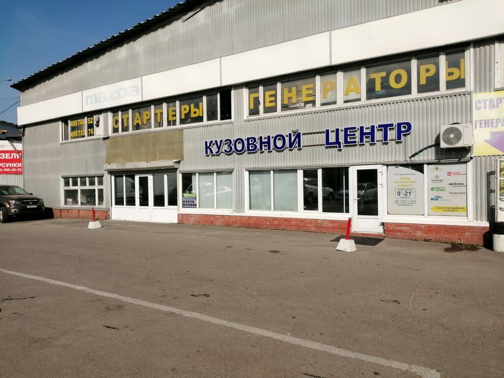
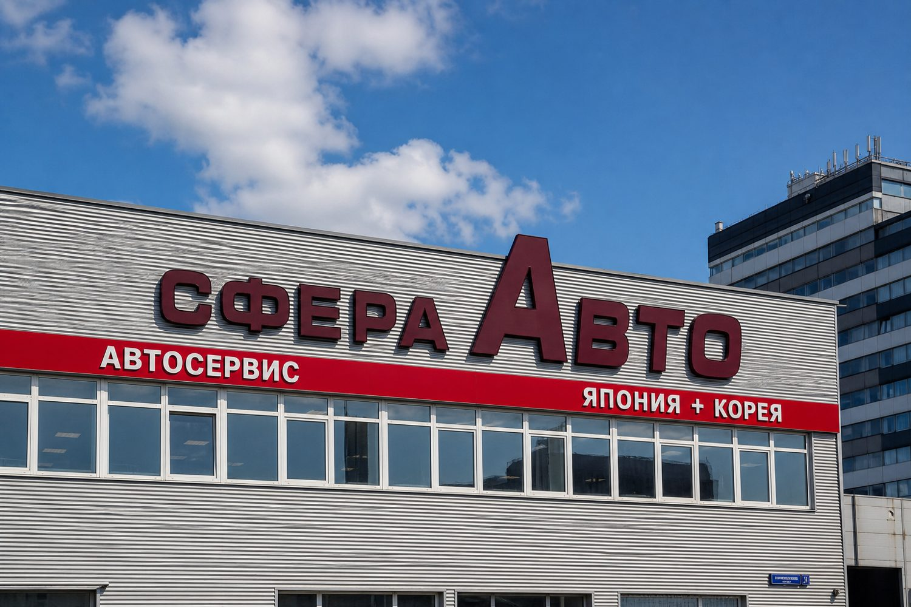

Чертаново Южное · метро Аннино
Охраняемая парковка на первой линии Варшавского шоссе и МКАД в торгово-сервисном комплексе СфераАвто
Открытая охраняемая стоянка на территории комплекса у пересечения Варшавки и МКАД. Удобный заезд с первой линии, рядом автосервисы, магазины запчастей и кузовной центр.

32-й кмМКАД, владение 15
Анниноближайшая станция метро
8:00–21:00ежедневно, без круглосуточного режима
открытаяохраняемая стоянка на территории комплекса
Парковка в комплексе СфераАвто
Не отдельный кооператив и не крытый паркинг: место на охраняемой территории торгово-сервисного комплекса.
Охраняемая территория
Стоянка на площадке комплекса, рядом с автосервисами и торговыми точками СфераАвто.
Рядом метро Аннино
Серпуховско-Тимирязевская линия. От станции — наземным транспортом до остановки «Варшавское шоссе — МКАД».
Часы комплекса
Ежедневно с 8:00 до 21:00. Администрация: по будням с 9:00 до 17:00.
Автосервис Япония + Корея
На той же площадке — сервис, запчасти и кузовные работы. Удобно оставить машину на время визита или на постоянное место.
Как занять место
Короткий звонок в администрацию комплекса, осмотр площадки и оформление.
01
Звонок или заявка
Напишите телефон или позвоните. Скажите, нужно постоянное место или стоянка на время визита в комплекс.
02
Свободное место
Проверим наличие и покажем заезд с Варшавского шоссе / МКАД.
03
Оформление
Согласуем срок, оплату и порядок доступа на территорию в часы работы комплекса.

Какие места можно оформить
Точную цену не публикуем: тариф зависит от срока и свободных мест.
Постоянное место
Машиноместо на территории
по запросу
- Охраняемая открытая стоянка
- Первая линия Варшавки и МКАД
- Доступ в часы работы комплекса
На время сервиса
по запросу
- Если приехали в автосервис или магазин комплекса
- Уточняется на месте
- Рядом кузовной центр и сервис Япония + Корея
Для Чертаново Южного
по запросу
- Жителям и гостям района
- Ближайшее метро — Аннино
- Альтернатива поиску места во дворах
Как доехать
Москва, ЮАО, район Чертаново Южное
МКАД, 32-й километр, владение 15
торгово-сервисный комплекс СфераАвто
Первая линия Варшавского шоссе и МКАД. Остановка «Варшавское шоссе — МКАД» — около 70 метров.
Метро Аннино, Серпуховско-Тимирязевская линия. Далее автобусами до остановки у МКАД, около 9–12 минут.
Частые вопросы
Парковка крытая и круглосуточная?
Нет. Стоянка открытая, на территории комплекса. Работаем ежедневно с 8:00 до 21:00, не круглосуточно.
Это гаражный кооператив?
Нет. Парковка относится к торгово-сервисному комплексу СфераАвто, а не к потребительскому кооперативу.
Как добраться от метро?
Ближайшая станция — Аннино. Дальше наземным транспортом до остановки «Варшавское шоссе — МКАД», комплекс в двух минутах пешком.
Как узнать цену?
Позвоните по телефону +7 (495) 712-11-99 или оставьте заявку — перезвоним и сообщим актуальный тариф.